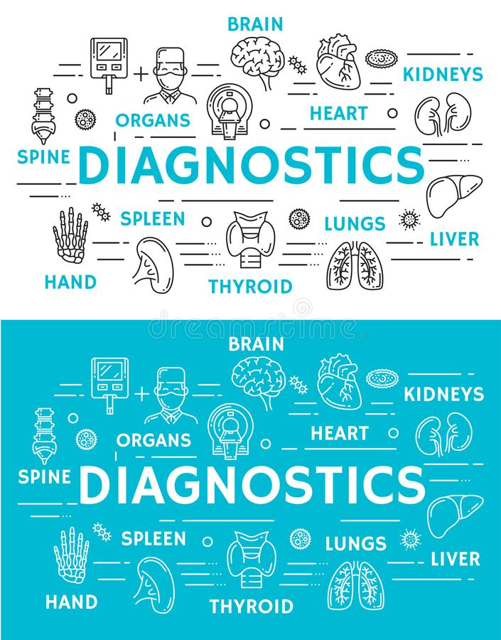

Medical Diagnostics

Diagnostic procedure can be regarded as an attempt at classification of an individual's condition into separate and distinct categories that allow medical decisions about treatment and prognosis to be made. Subsequently, a diagnostic opinion is often described in terms of a disease or other condition. (In the case of a wrong diagnosis, however, the individual's actual disease or condition is not the same as the individual's diagnosis.